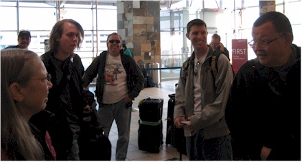
Here we are Sunday the 15th at the OKC airport - ready to get underway!
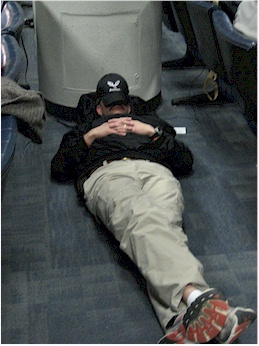
Now we are at JFK airport in New York, after a flight to Cincinnati. At this point we didn't realize that we'd get a LOT of chances to take pictures of Kendall sleeping.I got in trouble for taking this picture by a security guard. It was probably the most excitement that man had all day, chewing out a dangerous rule-breaker like me.
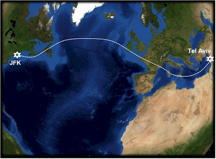
Pastor Ken made some awesome maps of our trip & shared them with me.
This shows the path of our 13 hour overseas flight.
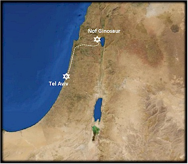
After we landed, collected our bags, met our tour guide, and flattened our bladders, we started on the 2 hour route shown above.
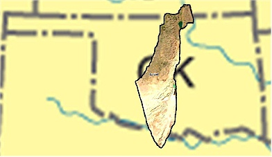
This shows the size of Israel relative to my home state of Oklahoma. This includes the desert part of Israel (which is the southern end and not very populated.)
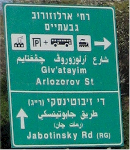
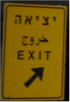
The road signs were all in Hebrew, Arabic, and English.
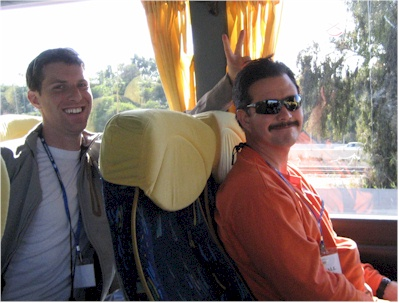
Chris & Kendall on the bus
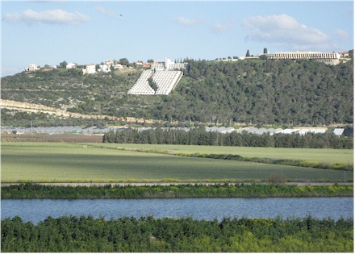
A shot of the countryside and a hotel built into the side of a hill.
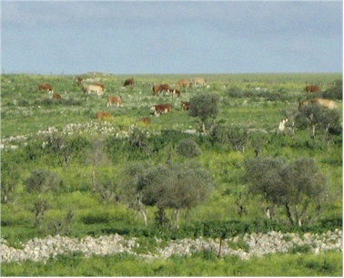
Rolling hills, cows - looks a little like Oklahoma in some parts.
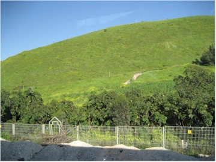
This is a Tel - a mound where many old settlements have been built right on top of one another. This one has only barely been excavated.
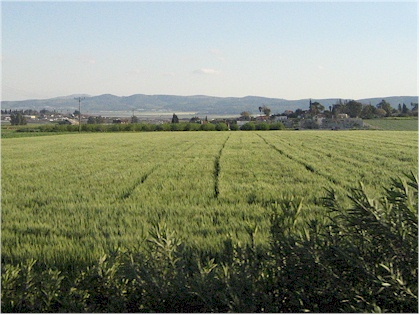
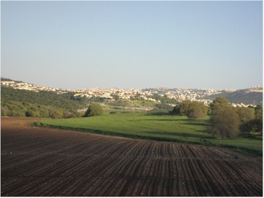
Almost all of the land in Israel is owned by the state. The people live up on the hills so that the productive land can be used to grow crops. This shows some of the land use in action
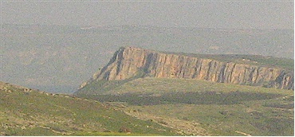
Mt. Arbel and our first view of the Sea of Galilee (it's hard to see)
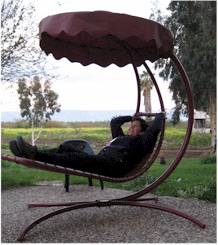
Trying out the strange hammocks at the hotel
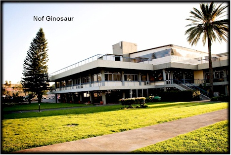
Our hotel - Nof Ginosaur. We loved this place.
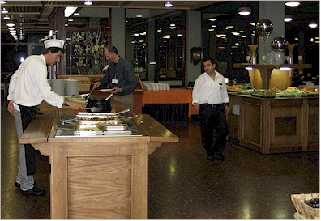
Eric was the first one to eat MANY times - including the first night. He often waited at the door so he could go in as soon as they unlocked it. The food was awesome.
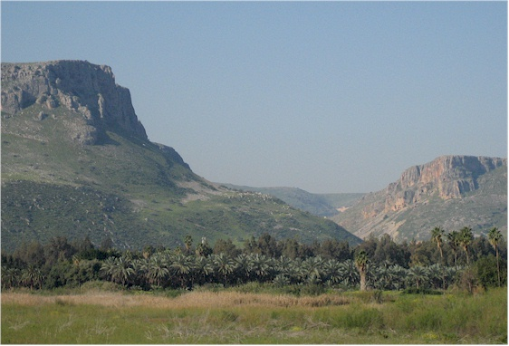
Mt. Arbel as seen from our hotel. It was lovely.
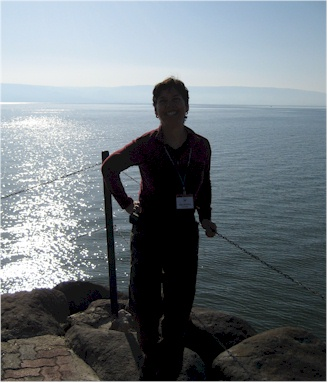
Posing in front of the Sea of Galilee after dinner.
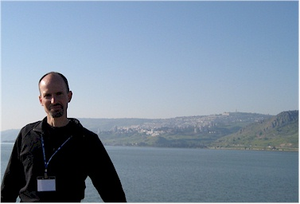
Eric with the sea and the city of Tiberias behind him.
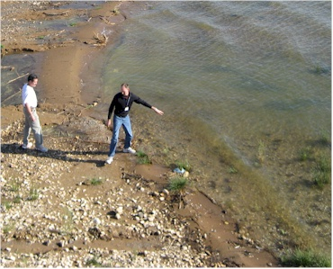
Kendall & Eric, checking out the temp of the water.
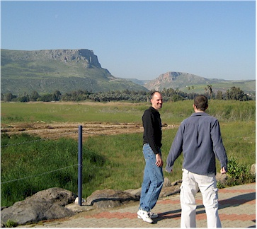
Looks like they're about to start sparring, doesn't it?
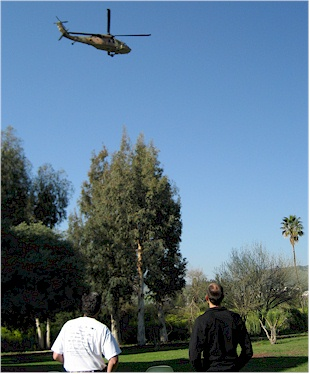
This was an unexpected treat - we got a front-row seat for a military "touch & go" helicopter exercise.
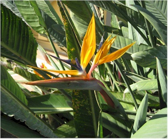
This flower looks kind of like a bird.
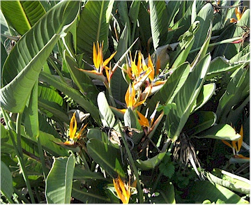
This shows the whole bush full of them.
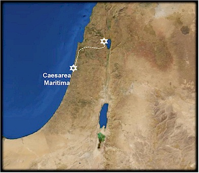
Day 1 - Tuesday, March 16. From the hotel to Caesarea Maritima
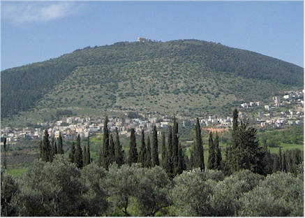
A view of Mt. Carmel along our drive, we'll visit that monastery on the top later.
Amir, our guide, relating the history
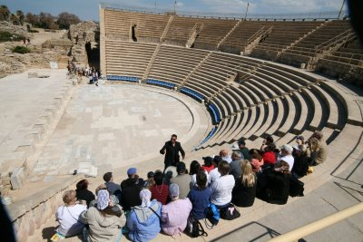
You can see Eric & I in black & maroon toward the lower left.
Caesarea Maritima Located on the Mediterranean Sea, this city was the Roman capital of Judea during the time of Christ and Paul. Herod the Great began to build the city in 25 BC and completed it in 13 BC. He named it Caesarea in honor of Caesar Augustus. It was a marvel of ancient engineering and was frequently called, “Little Rome.” Herod's palace was built right out on the coast, which also happened to be a fault line. I believe it went into the sea fairly soon after it was built. The Byzantines built on top of part of the hippodrome and the Crusaders built a fort in the middle of the ruins.
Teaching: Pastor David learned about many of the events recorded in the book of Acts which happened here.They include: Roman army captain named Cornelius who was among the first of the Gentiles to be saved lived here. Peter stayed at his home in this city, preaching and teaching his household. Acts 10:24-48 the Evangelist lived here. Acts 21:8 made his defense before King Agrippa in the theater where we are sitting (which is mostly reconstructed.) Acts 25:13-26
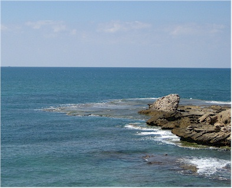
One of our few views of the Mediterranean Sea, it was beautiful.
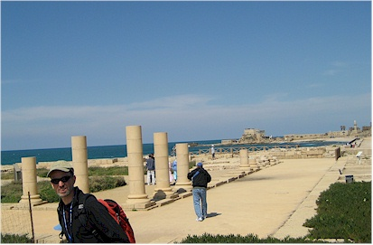
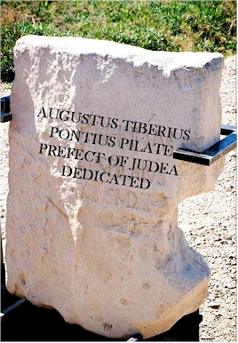
Here Pastor Ken has superimposed the English translation of the inscription on this cornerstone that was found here.
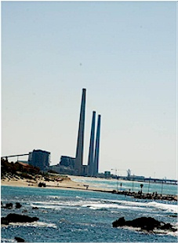
You could see this power plant from there, which our guide says is "officially" a coal plant.
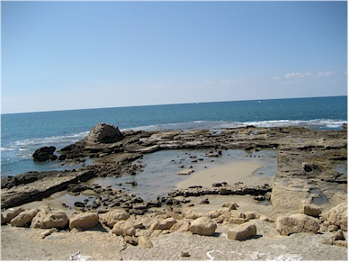
The swimming pool of Herod the Great - his palace was further out, but was built on a fault line and so it didn't last very long.
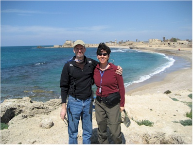
Eric and I in front of the ruins
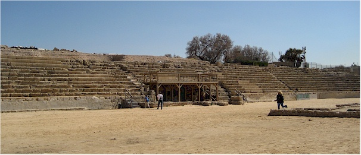
The Hippodrome - where they had chariot races and things like that.
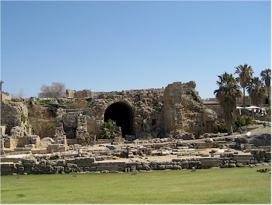
They think the prison where Paul was held was under this building, which would have been at the dock area.
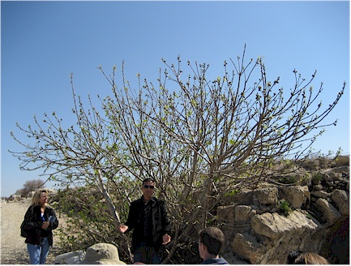
Here we get a lesson about fig trees - we were there just as the figs were growing. We learned that the leaves are only there to protect the fruit, so this helps explain why Jesus cursed the fig tree for not producing fruit. (Also it was a lesson for the Israelites as well.) See Mark 11:12-14, & 20-24.
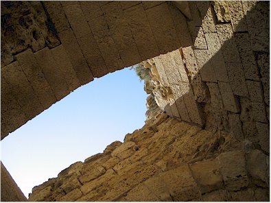
There is a Crusader-era portion of the city, which was built on top of the ruins of Herod's city years later. These were double arches in the Crusader fortress - it was an optical illusion, it looked like a single arch until you got under it. They could then dump things on the attackers once they got under there.
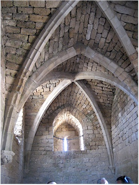
You can tell Crusader construction by these pointy arches
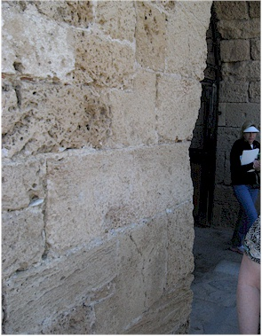
Walls and fortresses often had 90-degree angles in them, this would slow the progress of attackers and allow you to reign arrows down on them. This shows where the rocks had been rubbed away by horses and men in armor brushing it.
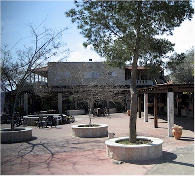
Lunch at a lovely spot - the best falafel I've ever had, ever
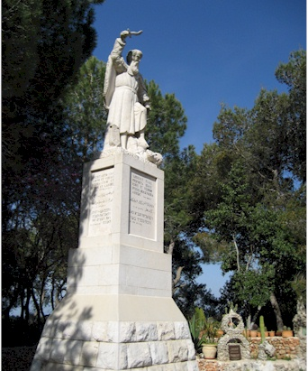
On top of Mt. Carmel. This is a statue of Elijah, calling down fire from heaven.
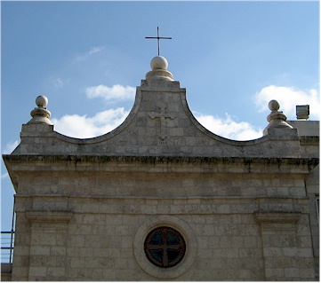
This is the monastery on top of Mt. Carmel
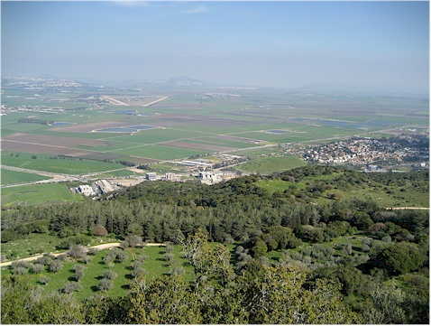
One of the beautiful 360 degree views from the top of the monastery.The two 'stripes' angling toward each other near the center is an Israli airbase. F16s were taking off and landing pretty much constantly each day. Our tour guide Amir was hilarious in that he was totally distracted by this, as he loved those jets. He would stop in the middle of a sentence and say, "Look at those babies, aren't they amazing?" Then when we all turned from him to look at the planes he would yell, "Look at me! I'm trying to explain something here!"
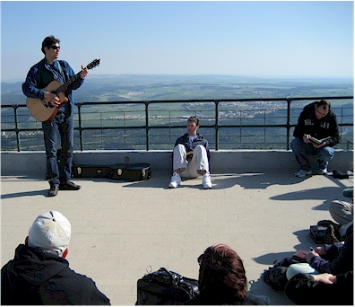
Rigert from Casa Grande, Arizona very kindly led our worship services for us. It was very nice.
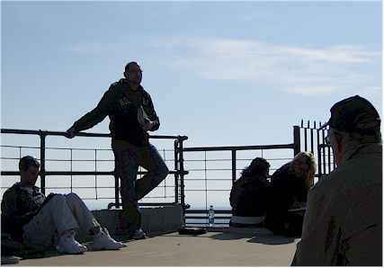
Here Pastor Mark Martin from Calvary Community Church of Phoenix gives a teaching.
Teaching: Pastor Mark
We learned about the prophet Elijah, starting with 1 Kings 17:1-4: And Elijah the Tishbite, of
the inhabitants of Gilead,
said to Ahab, “As the LORD God of Israel lives, before whom I stand, there shall not be dew nor
rain these years,
except at my word.” Then the word of the LORD came to him, saying, “Get away from here and turn
eastward,
and hide by the Brook Cherith, which flows into the Jordan. And it will be that you shall drink
from the brook,
and I have commanded the ravens to feed you there.” So the ravens (an unclean bird ) brought him
bread and meat each morning and evening.
Through this God was teaching Elijah to live by faith.
Then the brook dried up and God sent Elijah to a widow, a Gentile, who He had commanded to
provide for Elijah.
She had been about to use the last of her flour make a last meal for her and her son, but she
willingly gave it to Elijah instead.
"And Elijah said to her, “Do not fear; go and do as you have said, but make me a small cake from
it first, and bring it to me;
and afterward make some for yourself and your son. For thus says the LORD God of Israel:
'The bin of flour shall not be used up' nor shall the jar of oil run dry, until the day the LORD
sends rain on the earth.'
So she went away and did according to the word of Elijah; and she and he and her household ate
for many days. The bin of flour was not used up,
nor did the jar of oil run dry, according to the word of the LORD which He spoke by Elijah.
" 1 Kings 13-16. God is teaching Elijah that sometimes provision comes from unexpected sources.
Elijah told the widow woman 3 things:
1. Don't be afraid
3. Go
2. Do (Do his work first, then your own)
These are lessons we can apply to our daily walk with Jesus also. It is a great mental image:
more fearless Christians, going and doing His work.
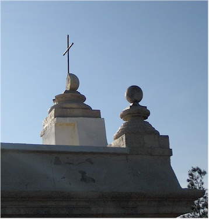
Years ago, lightening struck the top of the church and split the sphere holding the cross - leaving the cross standing.
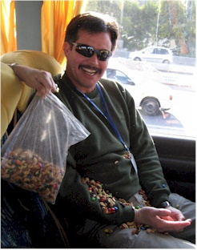
Junk food was constantly being circulated on the bus. Kendall was asleep when this was being passed over his head and got a rude awakening when it got dropped.
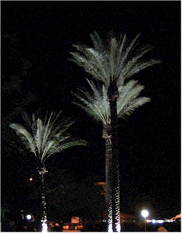
A night-time view of scenery at our hotel.
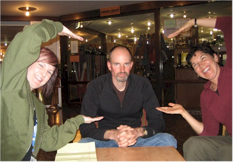
Our friends Luc & Cassy had just taught us a dice game called Farkle before we left on this trip. Piper also knew how to play so we got Chris to join us for a Farkle evening. We made up clever hand-motions to further humiliate anyone with the misfortune of farkle-ing. We accidentally took a video too. BTW - Eric claims that look on his face was intentional, but I think he was taking that farkle to heart.